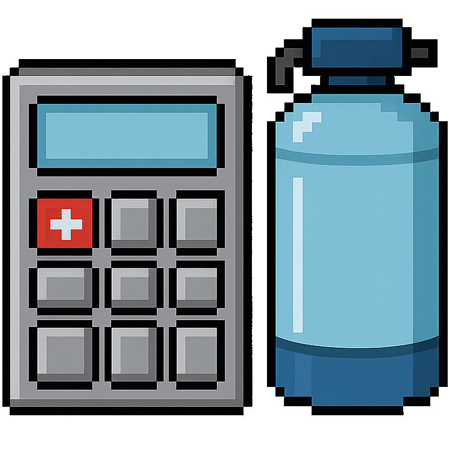

Welcome to System Sizer II
Version 20250724
Alert: In order to use this program, you MUST have a current water analysis with Hardness, Iron, and Manganese levels.
Hardness (gpg):
Iron (ppm):
Manganese (ppm):
People in Home:
Use Ecosoft ECOMIX C?
Yes
No
File a Bug Report
Donate to Developer
License
Help